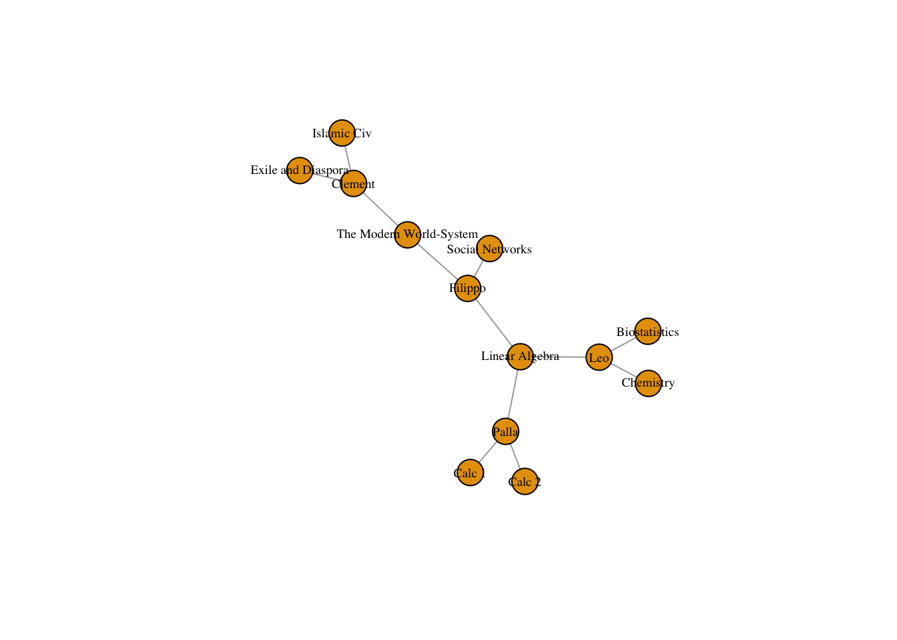
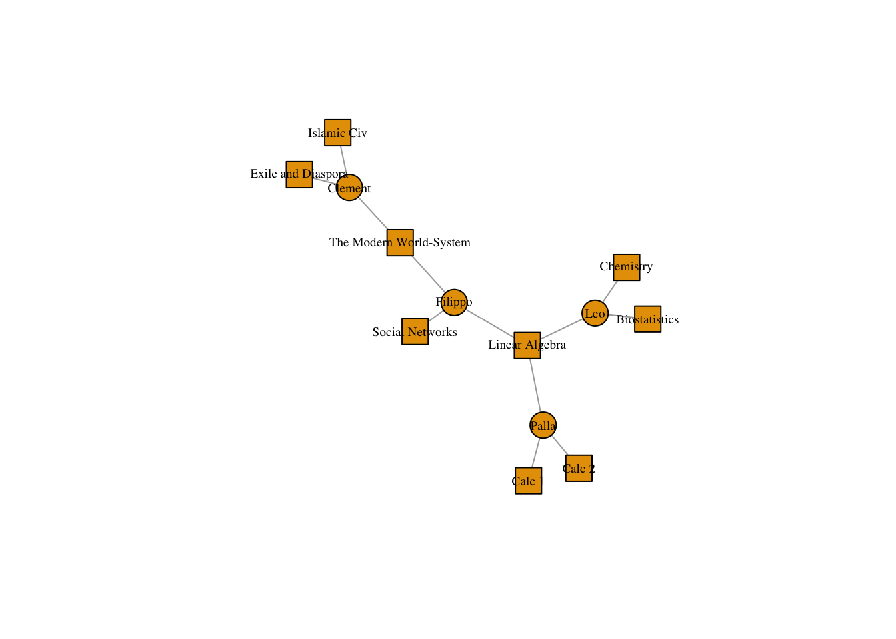
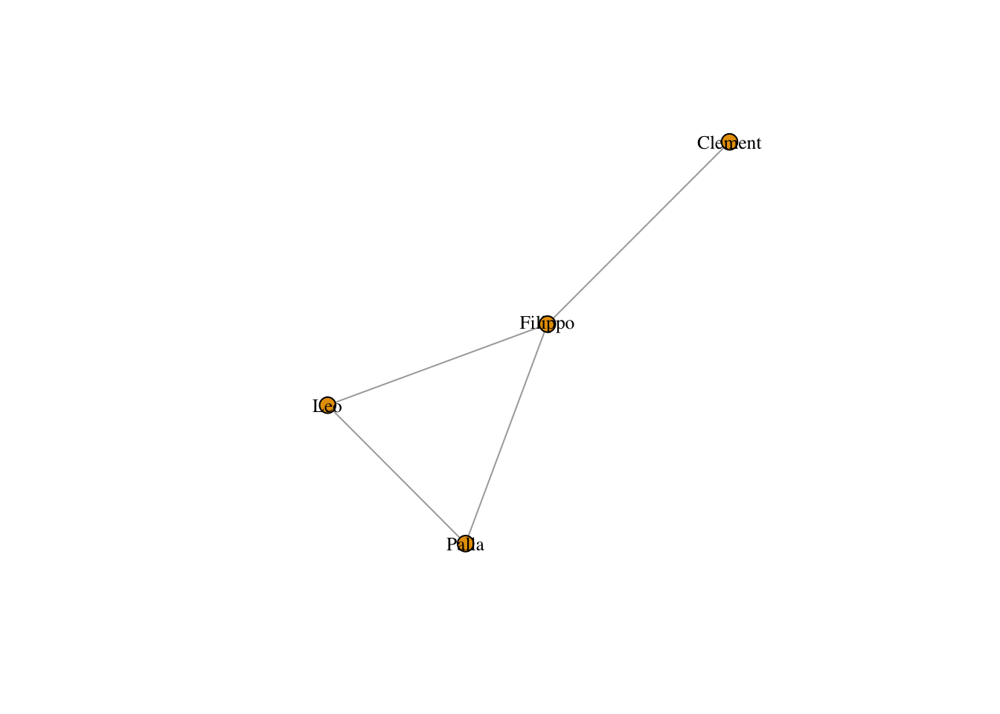
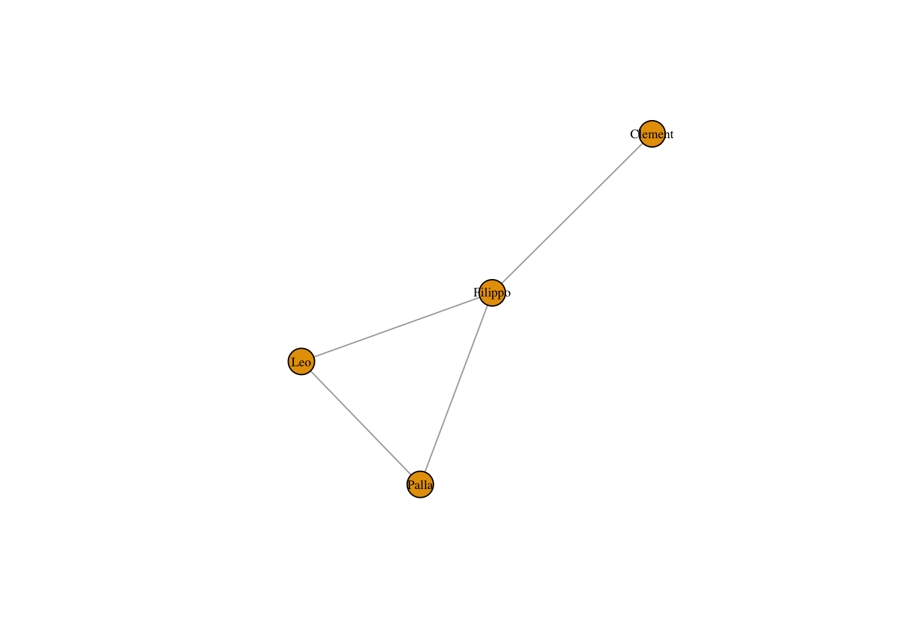
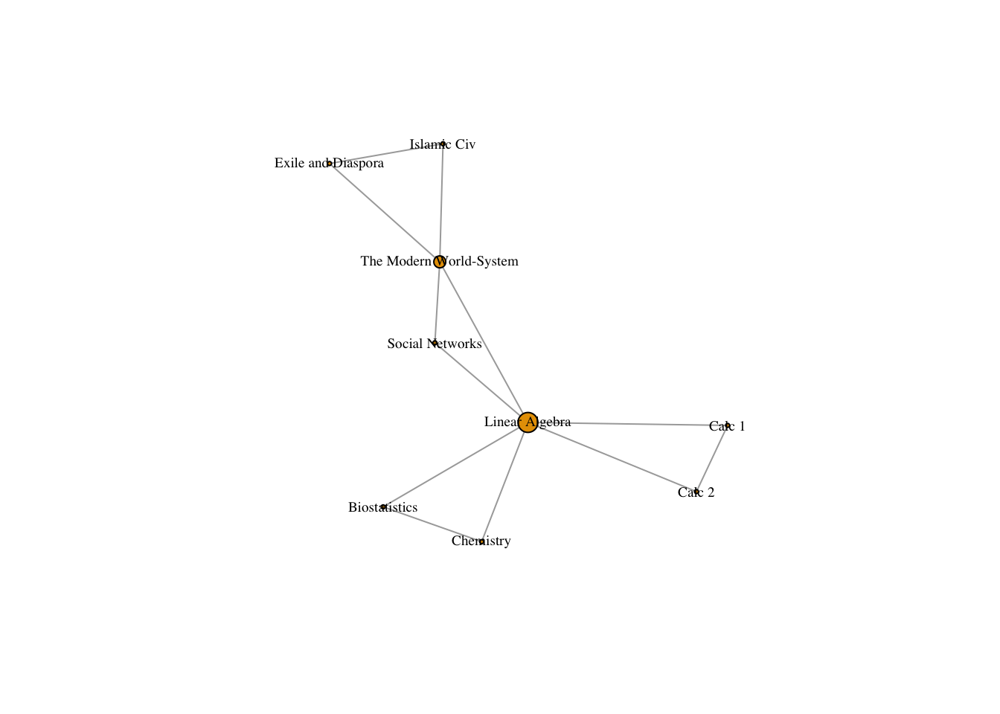
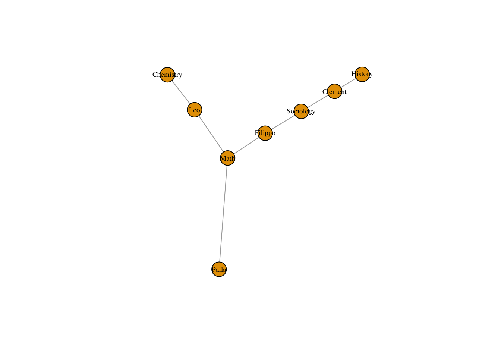

10 Affiliation Data
This portion of the tutorial focuses on affiliation data. Individuals can be directly linked to one another by affections or interactions. We have spent the tutorial so far working with direct, one-mode networks.
That said, individuals can also be linked through “affiliations”, that is, shared associations to groups or objects.
As an example, people might be tied by the classes they have taken together. Such data might look like:
Person, Classes Leo, Biostatistics, Chemistry, Linear Algebra Clement, Islamic Civilization, The Modern World-System, Exile and Diaspora Paula, Calc 1, Calc 2, Linear Algebra, Filippo, Linear Algebra, Social Networks, The Modern World-System
We can create a network with two types of nodes - one set of nodes will be people, the other classes. People, in this network, cannot be directly tied to each other. Rather they are co-affiliated with a class, which serves as the basis of their connection. Therefore, all ties will be between nodes of different types.
To create this network, we need to turn the above data into an edgelist, convert it to a matrix, and plot it in igraph.
Let’s start with the data.
library(igraph)
classes_data <- data.frame(name = c("Leo", "Clement", "Palla", "Filippo"), class1 = c("Biostatistics","Islamic Civ", "Calc 1", "Linear Algebra"), class2 = c("Chemistry", "The Modern World-System", "Calc 2", "Social Networks"), class3 = c("Linear Algebra", "Exile and Diaspora", "Linear Algebra", "The Modern World-System"), stringsAsFactors = FALSE)
classes_data## name class1 class2 class3
## 1 Leo Biostatistics Chemistry Linear Algebra
## 2 Clement Islamic Civ The Modern World-System Exile and Diaspora
## 3 Palla Calc 1 Calc 2 Linear Algebra
## 4 Filippo Linear Algebra Social Networks The Modern World-SystemThe reshape packages will let us convert this type of data into an edgelist.
# install.packages("reshape2")
library(reshape2)
classes_data <- melt(classes_data, measure.vars = c("class1", "class2","class3"), value.name = "classes", variable.name = "order")The ?melt function turns so called “short form data” into “long form”. It takes the class variables and combines them into a single variable “classes”. We only need two columns, name and classes, so we use the subset function to select them. If we look at the data now, it is basically an edge list, in which people are on the left side and classes they are affiliated with on the right.
classes_data <- subset(classes_data, select = c("name", "classes"))Once we have such an edge list, we can then use the table function to turn it into an incidence matrix, which is what igraph needs to turn affiliation data into an igraph object.
classesMatrix = table(classes_data)
class(classesMatrix) <- "matrix" # And we convert it from a table to a matrix
# View(classesMatrix)In an incidence matrix, the rows are of one class of node, while columns are of another. The rows are generally people who are affiliated with groups in the columns.
Using the get.incidence() function will turn our matrix into a bipartite network.
classesNet <- graph.incidence(classesMatrix, mode = c("all"))
plot(classesNet, vertex.label.cex = .6, vertex.label.color = "black")
We can change the shape of nodes to highlight their type.
V(classesNet)$shape <- ifelse(V(classesNet)$type == FALSE, "circle", "square")
plot(classesNet,
vertex.label.cex = .6,
vertex.label.color = "black")
10.0.1 Unipartite Projection
Bipartite networks can be represented (or “projected”) as unipartite networks. In this case, either people will be the only nodes, and they will be connected if they share an affiliation (i.e. they are in the same group) OR groups willbe the only nodes and they will be connected if they share an affiliation to a person.
We can make the projection two ways - using the bipartite.projection() function in igraph, or by multiplying the incidence matrix by its transpose (or vise versa).
The mathematical operation to make a person-to-person projection is to multiply the initial matrix by its transpose. In R that looks like:
personMatrix = classesMatrix %*% t(classesMatrix)
# View(personMatrix)where the t() function transposes the matrix that is passed to it and %*% performs matrix multiplication.
The diagonal of this new matrix tells us the number of groups each person is affiliated with, but we set it to 0 using the ?diag function.
number_of_classes_taken = diag(personMatrix)
diag(personMatrix) <- 0
# View(personMatrix)
personNet <- graph.adjacency(personMatrix, mode = "undirected")
plot(personNet, vertex.size = 8, vertex.label.cex = .8, vertex.label.color = "black")
To get the group-to-group matrix, we multiply the transpose by the initial matrix (reverse!)
groupMatrix = t(classesMatrix) %*% classesMatrix
# View(groupMatrix) # The diagonal details the number of people in each class
number_of_students <- diag(groupMatrix)
diag(groupMatrix) <- 0 # we again set it to 0Both of these operations turn our rectangular incidence matrix into a square adjacency matrix. Order matters. Now that we have adjacency matrices can use the graph.adjacency() function to turn them into network objects.
personNet <- graph.adjacency(personMatrix, mode = "undirected")
groupNet <- graph.adjacency(groupMatrix, mode = "undirected")
plot(personNet, vertex.label.cex = .6, vertex.label.color = "black")
plot(groupNet, vertex.size = betweenness(groupNet)/max(betweenness(groupNet)) * 10, vertex.label.cex = .6, vertex.label.color = "black")
We can analyze these networks just like we would any other network with a single node type.
10.1 Tripartite network analysis?
What if we wanted to analyze data from a third mode or level? For example, classes are not run independently, rather they nested in departments and schools, which govern curricula and student enrollment. Adding additional modes can allow us to trace multilevel linkages. Here is a quick example that we will build on in later classes.
First, we will build a classes to departments matrix.
classes_to_departments <- data.frame(class = c("Biostatistics","Islamic Civ", "Calc 1", "Linear Algebra", "Chemistry", "The Modern World-System", "Calc 2", "Social Networks", "Exile and Diaspora"), department = c("Math", "History", "Math", "Math", "Chemistry", "Sociology", "Math", "Sociology", "History"), stringsAsFactors = F)
classes_to_departments_matrix <- table(classes_to_departments)
class(classes_to_departments_matrix) <- "matrix" Now following the paper on tripartite structural analysis, we can multiply the transpose of this matrix by the transpose of classesMatrix to trace links between people and departments!
people_to_departments <- t(classes_to_departments_matrix) %*% t(classesMatrix)We can graph this matrix and analyze it like a bipartite graph.
people_to_departments_net <- graph.incidence(people_to_departments)
plot(people_to_departments_net, vertex.label.cex = .6, vertex.label.color = "black")
10.1.1 Lab
For this week’s lab, install Ben Davies’ (a PhD student in economics here at Stanford!) package containing data on all the papers published in the NBER Working Paper Series. Take the bipartite edge list that it provides, subset it to a reasonable size (below, I show how to subset it to papers published since 2016) and use it to construct a bipartite network using the steps outlined above. Plot the resulting bipartite network, representing papers as squares and authors as circles. Identify the 10 authors who have published the most papers using the degree() function. Next, project the network to a one-mode network in which authors are connected to other authors and identify the 10 authors with the most collaborators, again using degree(). Below
install.packages('nberwp')library(nberwp)
data(paper_authors)
data(authors)
data(papers)
papers <- subset(papers, year >= 2016)
paper_authors <- subset(paper_authors, paper_authors$paper %in% papers$paper)
paper_authors$author <- authors$user_nber[match(paper_authors$author , authors$author)]
head(paper_authors)## paper author
## 45988 w21840 timothy_kehoe
## 45989 w21840 kim_ruhl
## 45990 w21840 jose_asturias
## 45991 w21840 sewon_hur
## 45992 w21841 robert_topel
## 45993 w21841 kevin_murphy